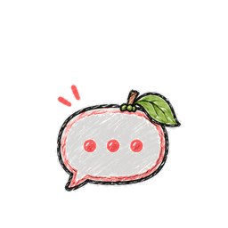
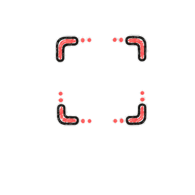
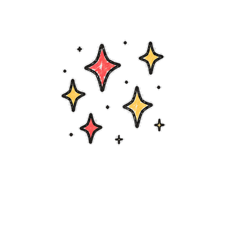
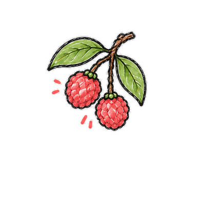

荔
LI
COMPANION STUDIO
荔小卫
荔小星
💎
律 / LÜ 实验室
连接中

聊一会儿
雪沐视觉实验室
✦
LI COMPANION ATELIER
+
+
+
+
SPEC 1.0 · CMF & KINEMATICS ATELIER



暖光藏品室
把今天，放慢一点。
01 / HOODIE
荔小卫
把心事收进兜帽，把好心情留给你。
安静陪伴
荔小卫正在醒来…
正面
侧面
背面
3/4 视角
拖动转身
−
＋
影棚灯光
影棚柔光
晨光
黄昏
轻动效